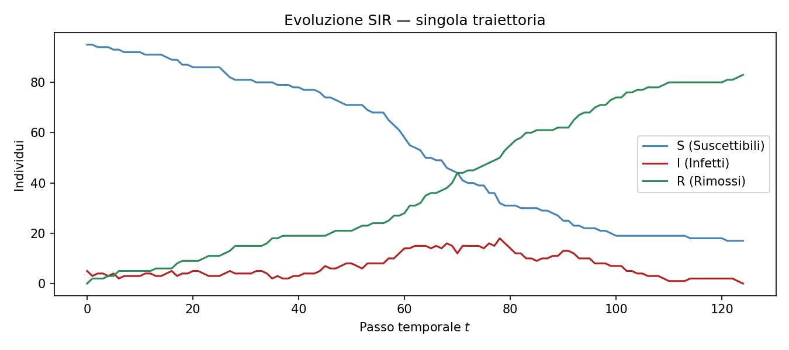
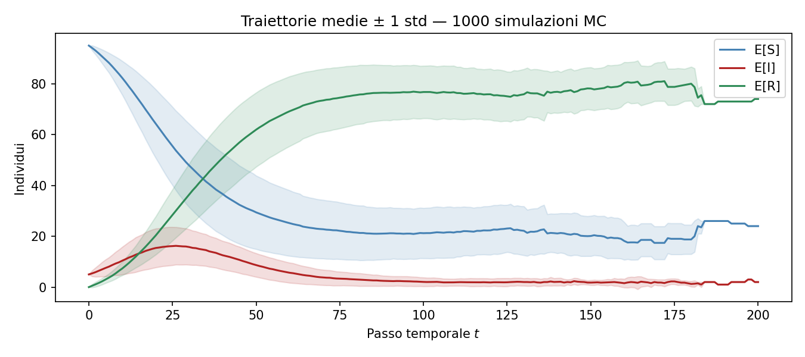
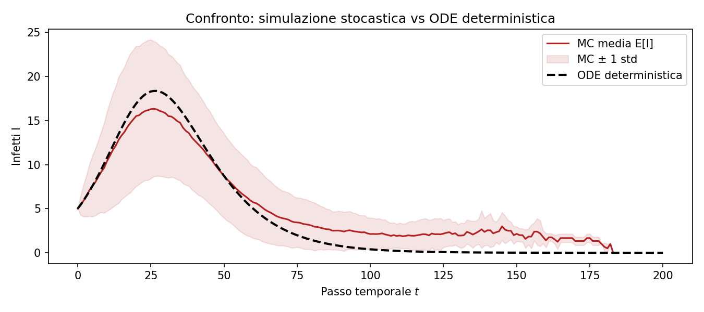
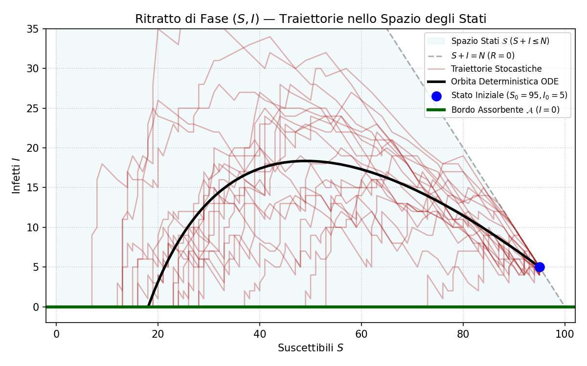
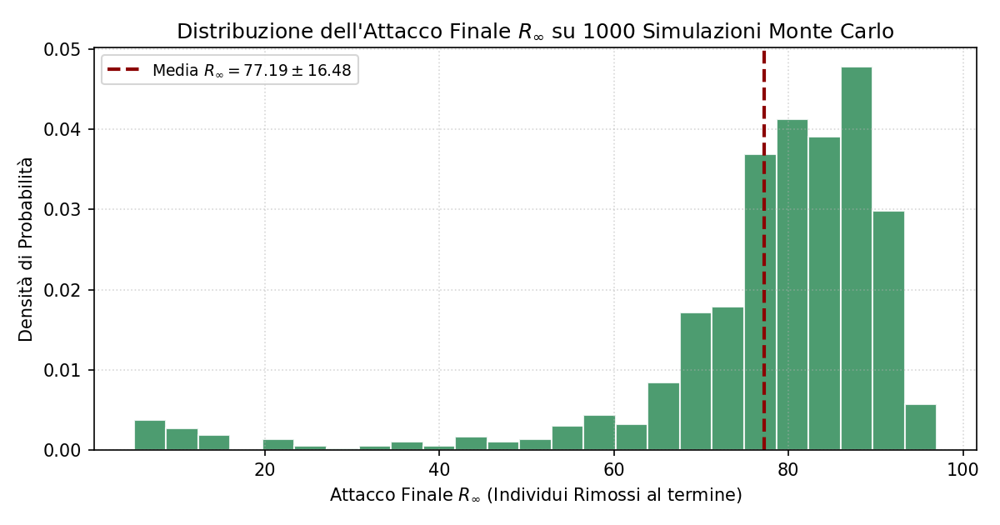
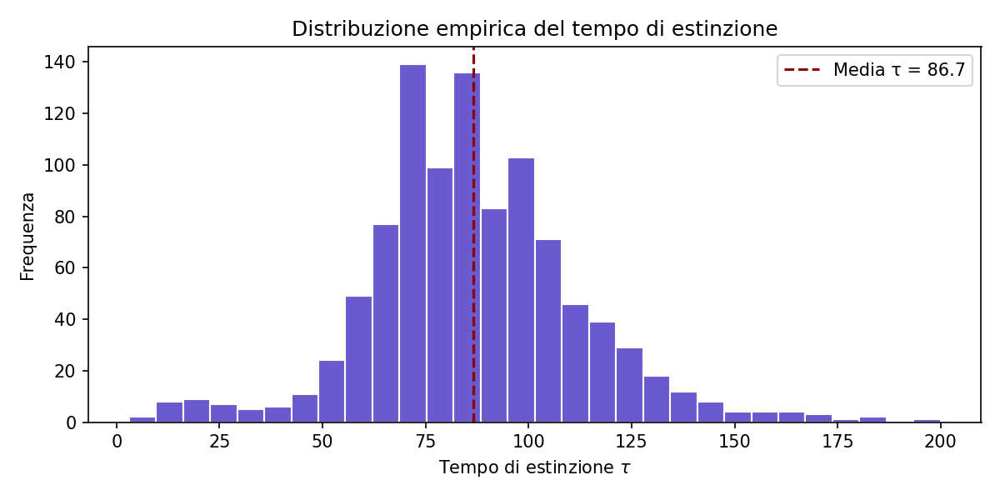
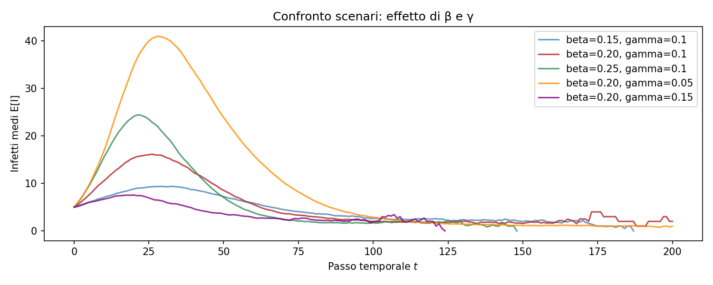

Un approccio stocastico rigoroso alla modellizzazione epidemiologica compartimentale.
A differenza delle approssimazioni fluide basate su ODE, in questa simulazione trattiamo l'epidemia come un Processo Stocastico Discreto su un numero finito di individui \(N\).
La transizione di stato tra i compartimenti Suscettibili (S), Infetti (I) e Rimossi (R) è governata da estrazioni casuali basate su distribuzioni binomiali condizionate allo stato precedente.
La conservazione della massa è garantita strutturalmente. Se \(I_t = 0\), il sistema raggiunge lo Stato Assorbente.
Osserviamo il forte rumore stocastico tipico delle piccole popolazioni. La curva non è liscia ma soggetta alle fluttuazioni dei contagi individuali.

Iterando migliaia di estrazioni indipendenti, la Legge dei Grandi Numeri stabilizza la media verso il comportamento atteso teorico.

Confrontando le traiettorie generate stocasticamente con le curve continue risolte tramite integrazione Runge-Kutta (RK4) sulle classiche equazioni differenziali ordinarie.

Dinamica nel simplesso \(S+I \le N\). Traiettorie stocastiche che impattano sull'asse assorbente \(I=0\).

Distribuzione empirica della dimensione finale dell'epidemia su \(M=1000\) simulazioni (\(76.59 \pm 8.41\)).

Distribuzione empirica del tempo necessario affinché \(I = 0\) (\(\bar{\tau} = 86.66\)). Estinzione quasi certa in tempo finito.

Transizione di fase attorno alla soglia critica \(R_0 = 1\). Esplosione dell'attacco finale per \(R_0 > 1\).

Modella l'epidemia in tempo reale manipolando le derivate del Modello ODE (Limite Fluido).